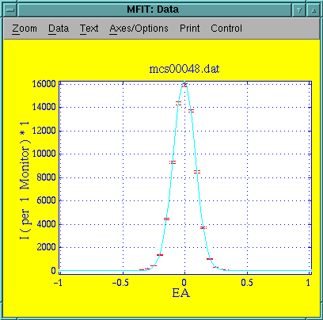
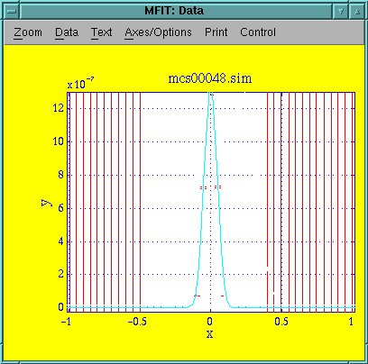
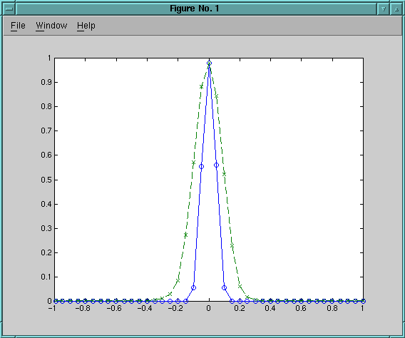

This experiment is an EA-scan in 3-axis defocusing mode on the Al2O3 sample. 5meV neutrons with the filter down. Collimation is 60' in the S-A position and open A-D.
Parameter Value Uncertainty Amplitude 1.6269e+04 1.5410e+02 Centre -5.6054e-03 6.9405e-04 Width 8.8897e-02 5.0586e-04 Background 4.1967e+01 2.4978e+00 Chi^2 4.31746 Q(Chi^2) 4.8e-26
Data file: mcs00048-1.sim
Every point from simulation of 2e7 neutrons. Intrument definition alu-3axis.instr revision 1.2.
Mfit does not supply a useful fit. Hand-fitting gives the following:
Parameter Value Uncertainty Amplitude 1.3500e-06 0.0000e+00 Centre 0.0000e+00 0.0000e+00 Width 4.5000e-02 0.0000e+00 Background 0.0000e+00 0.0000e+00 Chi^2 1.68131e+42 Q(Chi^2) 0 